LLM Agent 是潜在的上下文管理者：通过状态本体感觉（State Proprioception）引出自管理的上下文
长程工具 Agent 的上下文随任务推进不断膨胀直至逼近窗口上限，现有方案要么由 Agent 不可见的运行时规则做压缩/换页，要么训练有损压缩策略；论文指出更基本的瓶颈是 LLM 对自身上下文状态"本体感觉缺失"——仅凭 prompt 无法可靠推断 block 大小、新旧与剩余预算。方法上提出 VISTA：一个免训练、模型无关的上下文层，把工作记忆组织为带稳定 ID 的类型化可寻址 block，每轮注入 dashboard（token 用量、recency、归档状态、剩余预算），并提供无损归档/按路径恢复的元工具，使上下文管理成为 Agent 动作空间的一部分；理论上用 Fano 不等式证明可恢复性与状态可观测性缺一不可。关键结论：同一免训练接口在 LOCA-Bench 上把 Gemini-3-Flash 从 22.7% 提到 50.7%，BrowseComp-Plus 达 58.0%，且缓存感知成本低于 Claude Code；消融显示去掉 dashboard 会导致过度归档、恢复不足，收益随上下文压力增大而扩大，并在四个 backbone 上一致成立。
长程工具 Agent 的上下文（工具证据、过时观察、失败尝试、用户约束等）不断增长直至挤压或溢出上下文窗口，Agent 必须决定什么保持可见、什么搁置、之后如何恢复。现有两类方案均有缺陷：一类在 Agent 不可见的运行时层用固定规则做掩蔽/换页/驱逐，规则无法预知哪些证据日后重要；另一类把决策移入 Agent 但靠训练学习压缩策略，常通过摘要或删除丢弃证据且绑定训练设置。作者指出两者共同错过的基本缺口是"上下文状态盲"（context-state blindness）：模型仅从 prompt 无法可靠推断 block 大小、recency、归档状态与剩余预算，而这些恰是 keep-or-archive 决策所需的信息。
提出 VISTA（Visible Internal State for Tool Agents），把上下文管理建模为 Agent 对自身工作记忆的元工具决策，包含三部分：(1) Context Stream：把交互历史改写为带稳定 ID 的类型化可寻址 block 流，可见工作集与隐藏轨迹分离，归档 payload 以逐字 transcript 形式外部存储；(2) Dashboard：每次工具结果注册后重新生成的事实账本，列出各 block 的 token 估计、recency、类型、压缩级别、状态（visible/pinned/archived/offloaded_placeholder）与剩余预算；超预算时进入 overflow 模式禁用普通任务工具，由 preflight 守卫兜底（拒绝而非静默截断）；(3) Meta Context Tool：context_workspace_archive 将选中 block 替换为紧凑 handle 并把无损 payload 存到外部路径，恢复通过普通文件/终端读取完成（无专用检索 oracle），支持分层归档与按需局部读取。上下文动作与环境动作统一在同一模型策略的动作空间中。另给出可选 RL 后训练分支（workspace 一致的 rollout、结果奖励加客观过程惩罚），并用 Fano 不等式与 list decoding 证明：可恢复性与信息量足够的本体感觉状态二者缺一不可。
LOCA-Bench（百万 token 轨迹，128K 预算）：VISTA 解决 50.7%（38/75）任务，对比 ReAct 22.7%（17/75）、Claude Code 42.7%（32/75）；成本更低：每任务 2.86M tokens、36.4 步，对比 Claude Code 6.72M tokens、171.5 步
BrowseComp-Plus（100K 规模）：58.0%，高于最强基线 52.0%；GAIA：73.3%，与 Claude Code 73.9% 基本持平
缓存感知美元成本：VISTA 每任务 $0.93，低于 Active Context Compression $1.02、Claude Code $1.05、ReAct $1.26
压力扫描（8K–256K）：8K 时基本持平（86.7 vs 84.0），128K 时差距拉大到 50.7 vs 22.7，且 VISTA 平均 token 更少（2.86M vs 3.51M）
同一免训练接口在 Gemini-3-Flash、Claude-Sonnet-4.5、DeepSeek-V4-Pro、GLM-5 四个 backbone 上均有提升
感知盲区诊断：去掉 dashboard 后四个模型 token 总量估计中位相对误差 0.43–0.84 且与真值基本不相关；加上 dashboard 后总量误差降为 0、block 误差 0–0.02
机制消融：no-archive 降至 27/75、no-dashboard 降至 28/75，对比完整系统 38/75，而措辞与状态板变体仅差一两分；无 dashboard 时归档/恢复事件为 255/57（过度归档、恢复不足），完整系统为 69/105
AMA-Bench 离线轨迹记忆迁移：F1 领先 BM25、EMem、Mem0 适配器，judge accuracy 与专用 AMA agent 相差约 2 分以内，每 episode 运行时间约为其四分之一
RL 适配（Qwen3-8B）：ID 与 OOD 设置均超过 context-tool GRPO 基线；zero-shot 接近 OOD 后训练结果，说明收益不依赖 RL
Dashboard 开销：净开销在 N≈62 处峰值约 340 tokens 后回落，可见工作集随注册 block 数亚线性增长（拟合斜率 0.72→0.33）
相对已有工作的区别：(1) 相比在 Agent 不可见的运行时层做规则压缩/换页/驱逐（stale-observation masking、Demand Paging、AgentOS、MemGPT/Mem0 类记忆系统等），VISTA 把 per-block 运行时状态以 dashboard 形式显式暴露给 Agent 本身；(2) 相比通过训练学习压缩/折叠策略的 self-management（Context-as-a-Tool、Context-Folding、Active Context Compression 等），VISTA 免训练、模型无关，且归档是可逐字恢复的无损 payload 而非有损摘要，摘要只作导航用途；(3) 提出"本体感觉"视角：瓶颈是缺失的接口而非缺失的策略，并用信息论（Fano/list decoding）形式化证明可恢复性与状态信息率缺一不可；(4) 用直接探针实验证实四个 open/closed backbone 均存在 token 量级感知盲区，且消融把"能力"与"措辞"两个轴分离，证明收益来自机制而非提示措辞。
相关度级别：high
命中能力域：3.1 上下文工程与记忆 | 3.3 Agent 架构与工具使用 | 3.5 评测与可靠使用
理由：论文直接命中团队 3.1（上下文窗口管理与压缩、结构化上下文组织、长上下文策略、生产系统中的上下文管理）与 3.3（Agent loop/harness 设计、工具调用、单 Agent 执行可靠性）：VISTA 本身就是一个可复用的 harness 级上下文管理模式——类型化 block + 状态 dashboard + 无损归档/恢复工具，免训练、模型无关，团队不需要训练模型即可在自己的 Agent loop 中实现。其"上下文状态盲"诊断方法、'dashboard 比措辞更重要'的消融结论、以及 overflow 模式/preflight 守卫等工程细节，都可直接指导团队设计长任务 Agent 的上下文策略；缓存感知美元成本核算与多基准评测方法也契合 3.5 的成本效率与评测关注。对团队'把模型用好而非训练模型'的定位高度吻合。
建议动作：深入精读并做内部分享
arXiv:2606.30005v5 [cs.CL] 2026年7月31日
LightSpeed，腾讯
Binyan Xu 1, 2, ∗, Haitao Li 2, †, Kehuan Zhang 1 1 香港中文大学，2 LIGHTSPEED {binyxu, khzhang}@ie.cuhk.edu.hk，729156675@qq.com 本工作完成于作者在腾讯实习期间。† 通讯作者。
长时程工具 Agent 的瓶颈在于其上下文如何不断增长并逼近上下文窗口的极限。近期的系统将上下文管理交由 Agent 或系统控制，但它们要么学习会丢弃证据的压缩策略，要么在 Agent 永远看不到的层级中管理上下文。我们认为，这两种做法都忽略了更为根本的缺口：前沿语言模型对自身的上下文存在本体感觉盲区。仅凭提示词，它们无法可靠地推断块大小、新近度或剩余预算，而这些都是做出保留或归档决策所必需的信息。我们提出 VISTA（Visible Internal State for Tool Agents），这是一个免训练、模型无关的层，它将工作记忆表示为类型化的可寻址块，呈现包含 token 用量、新近度、归档状态与剩余预算的运行时仪表盘，并将各块归档为可恢复的全保真载荷。在 LOCA-Bench、BrowseComp-Plus 和 GAIA 上，同一套未经训练的接口可在 1M、100K 与 10K 规模的轨迹之间迁移。在 LOCA-Bench 上，它将 Gemini-3-Flash 的成绩从 22.7% 提升至 50.7%；在 BrowseComp-Plus 上达到 58.0%；在 GAIA 上仍保持竞争力。收益随上下文压力的增加而增长，并能跨骨干模型迁移；消融实验证实，仪表盘的作用不止于归档与恢复工具。
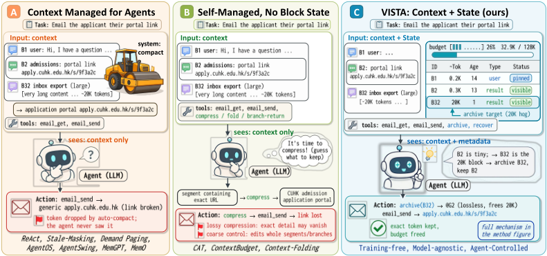
Language agents operate over stateful tasks such as filling spreadsheets from web and email evidence, modifying databases, preparing application materials, debugging code, and coordinating business workflows [16, 34, 45]. Their context is working memory. It accumulates tool evidence, stale observations, failed attempts, user constraints, hypotheses, file paths, and action contracts that must remain correct many steps later [22, 26, 31]. As the task runs, working memory grows until it crowds or overflows the context window, a pressure also studied in long reasoning systems that summarize or carry state across computation [2, 11, 29]. The agent must decide what to keep visible, what to set aside, and what to recover. How this growing context is managed determines whether long-horizon agents succeed.
Existing approaches differ in who makes these decisions. One family keeps the decision outside the agent. Stale-observation masking hides old tool outputs by rule [46], and OS-style layers page or evict context beneath the agent. These layers track statistics such as size, age, and usage, but only inside the runtime. The agent cannot inspect them, and a fixed rule cannot know which evidence will matter later. A second family moves the decision into the agent and learns it from data. Context-as-a-tool fine-tunes a compressor, and budget-aware methods train compression policies with reinforcement learning [16, 25, 26, 31]. These methods can improve performance, but they often discard evidence through summarization or deletion and are tied to the training setting. Across both families, the agent can read block contents but remains context-state blind: the prompt omits the runtime state needed for a keep-or-archive decision, including block size, recency, archive status, and remaining budget. Figure 1 contrasts these families with our approach on one task.
We take an elicitation view. We hypothesize that capable models already contain contextmanagement competence from pretraining on note-taking, retrieval, and reorganization traces, and that a missing interface, not a missing policy, is the bottleneck. Context management is a metatool decision over the agent's own working memory, made under partial observability. The agent must choose what to keep or externalize while the prompt omits the runtime state that governs the choice. Learned policies or distilled agent skills can compensate through training [36], but this entangles what information should be exposed with what policy should act on it. Figure 2 makes this motivation concrete: RL-based self-management implicitly improves both task performance and the model's ability to recognize when its context needs management, whereas supplying the state
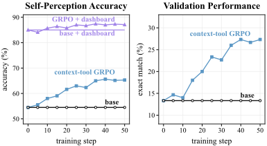
dashboard makes that judgment easy even before adaptation. We therefore make the state explicit and express when-to-manage criteria as a rubric-style instruction. VISTA elicits these latent capabilities without requiring training or model-specific adaptation, while remaining compatible with RL.
This proprioceptive view implies three requirements. The interface must expose per-block token cost, recency, archive status, and remaining budget. It must be reversible, because one-way deletion or summarization can remove evidence needed later. It must be model-agnostic, so gains reflect elicitation through the interface, not training for one backbone or domain.
We introduce VISTA (Visible Internal State for Tool Agents), a context layer that represents working memory as typed, addressable blocks and surfaces a dashboard with per-block token usage, recency, archive status, and budget. The dashboard is a proprioceptive view of the agent's context state. The agent can archive bulky blocks as external payloads with stable handles and recover exact bytes on demand. Archived payloads are exact transcripts, so removing a block from the prompt does not destroy it. We prove that both underlying resources are necessary: recoverability, because discarded evidence cannot otherwise be restored; and sufficiently informative proprioceptive state, because a size-blind manager over-archives or under-recovers even given recovery (Proposition 1 and Theorem 1). VISTA realizes both resources in one agent-facing interface. VISTA requires no training and wraps any backbone.
Empirically, Table 1 tests VISTA across million-, 100K-, and 10K-token trajectories in LOCA-Bench, BrowseComp-Plus, and GAIA. In LOCA-Bench [45], it solves 38/75 tasks versus 17 for ReAct and 32 for Claude Code, with lower trajectory cost than Claude Code. On BrowseComp-Plus, it reaches 58.0% versus 52.0% for the strongest baseline, and remains competitive on GAIA. Pressure sweeps show that the advantage grows on long trajectories, where VISTA cuts active-context overhead while improving accuracy. The same untrained layer improves all four tested backbones, and ablations show that the dashboard matters beyond archive and recovery tools. In transfer, VISTA also reaches higher F1 than the specialized AMA-Bench agent without memory tuning.
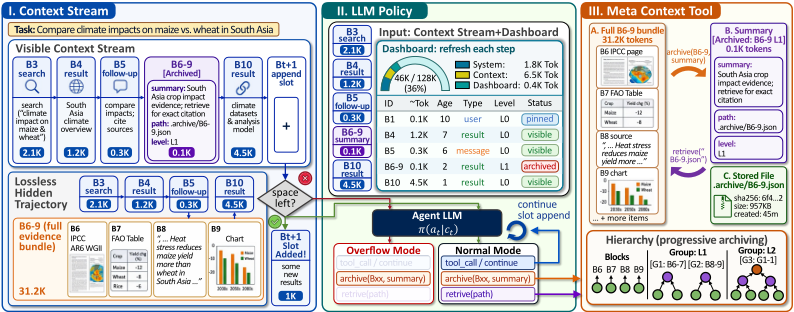
This paper makes three contributions.
VISTA 将上下文管理视为一种作用于智能体自身工作记忆的元工具决策。图 3 展示了这一三阶段循环：上下文流、刷新后的仪表板，以及归档/恢复工具。其目标是让上下文状态对未经修改的模型而言可被感知，而无需微调、无需模型特定的改动，也不会破坏证据。
在步骤 t，一个工具智能体拥有任务目标 g、原始交互历史 H t、环境工具 T env 以及上下文预算 B。我们将该历史记为动作-观察对 H t = ( a 1 , o 1 , . . . , a t - 1 , o t - 1 )。标准的 ReAct 风格执行框架（harness）会将这一仅追加（append-only）历史序列化为下一次模型输入。一旦序列化后的历史超过 B，执行框架就必须截断、清除、屏蔽或总结先前内容。这些干预将“哪些内容仍然可见”、“哪些内容被精确保留”以及“哪些内容日后可以恢复”混为一谈。
VISTA 通过一个由可见块和可恢复归档载荷组成的工作区 W t = ( V t , A t ) 将这些选择分离开来。模型并不直接作用于原始记录，而是作用于工作区的渲染结果
其中，D t 是仪表板：一份记录块 ID、token 估计值、新近度、块类型、归档级别、状态与剩余预算的事实性台账。候选渲染 ˜ C t 可能会超出预算。在这种情况下，预检（preflight）会生成一个预算安全的管理型渲染 C t，其中保留仪表板、可操作句柄和紧凑存根，同时禁用常规任务工具；否则，它返回常规渲染。原始记录仍会被记录下来用于评估，但智能体的工作记忆是工作区，而非仅追加历史。
工作区不变量。执行框架在预检与最终组装之后强制执行预算约束 | C t | ≤ B；每个可操作单元都必须拥有稳定的块 ID 或句柄；并且，除非智能体显式删除，否则归档载荷的字节始终保持可恢复。仪表板所报告的 token 估计值与这些检查所使用的完全一致，因此智能体看到的状态正是执行框架将要强制执行的状态。
图 3 的左侧面板展示了 VISTA 如何将对话记录重写为块流。面向智能体的状态具有两种存储模式：
删除是一种显式的智能体动作，而非一种存储模式：它会永久移除所选内容。一个单独的硬预算守卫可能会用可恢复的卸载占位符替换已经可见的原始工具结果；仍然无法容纳的新工具结果将被拒绝并附带一条简短通知，可在上下文清理之后或以更窄的查询重新运行。这些保障措施不同于智能体的归档决策。
该数据流为智能体提供了一个用于上下文决策的地址空间。当一组证据变得过大时，数据流会保留一个紧凑的句柄，而确切的载荷则保留在隐藏轨迹中。只有当由此产生的请求仍保持预算安全时，新的观察结果才会被接纳。
结构保持。可见数据流是下一次调用的工作集，而隐藏轨迹则存储着稍后可能需要的确切载荷。工具结果仍与其对应的助手工具调用保持关联，归档结果则以协议有效的形式呈现。如果父调用也被归档，该占位符将成为普通上下文，而不是一个孤立的工具响应。
仪表盘输入。中间面板展示模型所接收到的内容：可见上下文数据流加上一个仪表盘。仪表盘在每条工具结果被登记之后都会重新生成，因此 Agent 基于当前工作区状态采取行动。它是针对数据块的台账，而非记忆预言机：它暴露的是由执行框架（harness）或 Agent 先前动作所创建的运行时状态，并不会添加隐藏的任务证据。
统一动作空间。同一个模型策略既选择普通的环境动作，也选择上下文动作：
其中 T ctx 包含两个专用的工作区工具。恢复操作通过普通的文件或终端读取从归档路径读取，因此属于环境动作，我们将其抽象地记为 read _ path( h, q ) ∈ T env 。因此，上下文管理并不是一个独立的事后控制器。它是模型动作空间的一部分，以仪表盘以及 C t 中仍然可见的任务证据为条件。
模式切换。仪表盘是元工具的本体感知通道。仅凭提示文本，模型无法可靠地推断某个数据块的代价有多高、有多新，或者它是否已被再次使用。这些信号决定了一个数据块应当保持可见、被归档，还是被恢复。在正常模式下，Agent 可以调用环境工具、继续任务、归档数据块，或读取已归档的载荷。在溢出模式下，普通工具调用被禁用，直到 Agent 缩减可见上下文为止。因此，允许的动作集合为
硬性预算由执行框架强制执行，但移动哪些内容由 Agent 决定。最后一道预检保护可以在接近硬性限制时转存已经可见的原始工具结果数据块；如果新返回的结果仍然无法被接纳，执行框架将拒绝该结果，而不是将其静默截断。完整的循环流程见附录 F.1。
归档接口。右侧面板展示的是元上下文工具（meta-context tool）。归档操作接受一个选定的数据块集合 S 和一段简短的替换摘要 ρ：
第一行在可见流中创建一个紧凑的句柄；第二行则通过普通的环境读取来声明无损契约，而无需第三个上下文工具。载荷的确切内容被移至外部归档，而 h 则保持路径、层级、大小和校验和元数据可见，为外部审计留下天然的边界 [37]。可选的选择器 q 用于请求该载荷的精确范围或子集；q = ∅ 则表示请求完整载荷。恢复操作通过普通的文件或终端访问已存储的载荷路径来完成。这里不存在任务特定的检索神谕（retrieval oracle）。如果载荷过大，Agent 可以读取有界的数据块，或以更窄的参数重新运行原来的源工具。
所存储的载荷是模型所见内容的逐字记录，而不是对源数据完整性的保证。如果某个源响应是分页的或被截断的，归档会原样保留该结果，并将重新查询的工作留给 Agent。
分层恢复。归档是分层的。第一级归档可以将若干原始数据块归组为一个束（bundle），正如图中的 B6-9 所示。随后，当上下文压力增大时，这些组本身也可以被归档为更粗粒度的句柄。因此，可见流中存储的是一小段摘要和检索指南，而隐藏的轨迹中存储的则是确切的证据。这正是 VISTA 区别于摘要化（summarization）之处。摘要用于引导导航，但它们并不是证据的唯一表示形式。
恢复过程按层级的逆序进行。Agent 可以先查看某个粗粒度句柄，恢复其载荷，然后再决定是否应将更小范围的证据重新放回活动上下文。当需要某一行或某个标识符时，它无需重新加载整段冗长的记录。它可以恢复该文件，搜索或读取其中有界的一部分，然后以更小的数据块继续任务。
上述接口无需训练（training-free）：指令遵循模型无需更改其参数即可使用仪表盘和上下文工具。我们还考虑了一个训练后（post-training）分支，用于细化同一策略在何时以及如何调用归档与恢复。该分支保持工作区、仪表盘和无损工具契约不变。遵循 Context-Folding [25] 的轨迹级优化模式，我们对完整的交互轨迹进行优化，同时让模型的每个 token 都以该 token 生成时实际可见的工作区为条件。
工作区一致的 rollout。对于训练任务 g ，旧策略采样一组 G 条轨迹 { τ i } G i =1 。设 W i,t 为 token x i,t 之前紧邻的工作区，并令 F ( W i,t ) 表示式 (1) 中的渲染结果。归档动作会将其选定的载荷从后续渲染中移除，而恢复动作则只恢复实际被读取的内容。令 H i,t := F ( W i,t ) ⊕ x turn i,<t 包含当前 LLM 回合中已生成的自回归前缀。因此，重要性比率为
并且 m i,t = 1 LLM ( x i,t ) 对工具观测进行掩蔽。因此，rollout 与策略优化使用的是同一个受管上下文；若为 actor 更新而重构原始的、只追加（append-only）的转录文本，将会训练出一个不同的策略。
结果奖励与过程惩罚。每条轨迹都从基准测试（benchmark）评分器获得一个任务奖励 R i ∈ [0 , 1] 。稀疏的任务奖励决定了管理是否保留了有用的证据。我们只针对客观的工作区失败添加惩罚；我们不直接奖励归档频率或压缩。设 p i,t = | F ( W i,t ) | /B 为活动上下文压力，ρ 为软压力阈值。token 级的过程信号为
压力由动作发生前的渲染一次性计算得出——包括可见块、句柄、通知和仪表盘——并由该回合中的所有 LLM token 共享；工作区转变从下一回合起才影响压力。当且仅当上下文工具执行器返回错误或规范化工作区哈希未发生变化时，Q invalid i,t = - λ i ，这涵盖了缺失句柄、格式错误的调用以及完全重复的情况。Q undo i,t = - λ u 标记一个在其他方面有效的归档-恢复对，该对在任何中间环境观测或上下文增长之前就恢复了相同的工作区哈希；该惩罚事后（post hoc）分配给两个动作回合的 LLM token。这三项在同时出现时相加，并且仅在式 (7) 中被裁剪。我们使用 ρ = 0 . 8 ，λ p = λ i = 1 ，以及 λ u = 0 . 2 。在低于固定占用阈值时进行归档不受惩罚：一个较小的提示（prompt）仍可能包含值得主动外置的低密度内容。
我们构造一个按结果归一化、经过程塑形的 token 优势
其中 σ R := √ G - 1 ∑ G j =1 ( R j - µ R ) 2 是任务内的结果标准差。因此，组基线与尺度来自结果奖励，而 Q i,t 提供局部的过程塑形。该策略最大化如下裁剪目标
此处 |τ i| := ∑ t m i,t 表示轨迹 i 中由模型生成的 token 数量。只有模型生成的 token 才计入式 (8)；普通推理、上下文动作、恢复决策与最终综合被联合优化。训练提示词通过训练集划分上的试点 rollout 进行筛选，以保留同时包含成功与失败样本的分组，因为所有样本结果完全相同的分组不会产生任何相对于结果的学习信号。
该奖励刻意排除了上下文工具调用次数、活动上下文缩减量以及自我感知探针准确率。这些量始终作为留出的机制度量：直接优化它们会纵容轻而易举的过度归档，并使任何训练后的感知增益变得循环论证。
VISTA 将无损恢复与信息丰富的仪表盘结合在一起。这两种资源解决的是不同的问题：恢复在驱逐之后保留证据，而自我感知则帮助选择要驱逐的内容。我们用 Fano 不等式 [23] 将二者形式化：重构给出恢复分离，列表译码给出信息-恢复权衡。我们在此保留主要结论与直觉；信道计算、辅助引理以及完整证明见附录 A-D。
恢复在预算压力下是必要的。在 T N,k 中，历史包含 N 个独立的 k 比特证据块，但提示词仅能容纳 B < Nk 比特。一个均匀随机选取的目标块会在压缩之后被揭示，并且必须被精确复现。非恢复方法只保留一个满足 H ( R ) ≤ B 的提示词内表示 R；可恢复方法则可以在揭示之后重新加载被选中的块。
命题 1（在预算压力下恢复是必要的）。对于任何非恢复方法，若其揭示前的提示词内状态 R 满足 H ( R ) ≤ B，
只要指令、N 个句柄与一个恢复出的块能够容纳在 B 之内，VISTA 就以概率 1 正确。因此存在一些可行的缩放区间，在其中非恢复方法的界趋于零，而 VISTA 保持在 1。
该界刻画了延迟的证据需求：有损状态无法知道哪个具体的块在之后会变得重要，而归档句柄会在目标已知之前保留每一个块。
自我感知对于高效地使用恢复是必要的。恢复消除了无损性障碍，却没有消除控制问题：Agent 仍需决定移动哪些块。我们为两个 Agent 提供相同的无损归档，仅改变用于识别最佳驱逐目标的状态信息量。⋆，
定义 1（腾出空间实例 M n,L,ℓ）。工作集包含 n 个块。一个在 { 1 , . . . , n } 上均匀分布的隐藏索引 J 标记出一个大小为 L 的大块；其余 n - 1 个承重块的大小均为 ℓ < L，且 κ := L/ℓ ≥ 2 为整数。提示词超出预算 L 个 token。大块之后不再被需要，但每个承重块稍后都会被查询；每次归档之后，Agent 只能观察到溢出是否仍然存在。这里的大小指插入替换句柄后净释放的提示词 token 数。
为了退出溢出，Agent 按某种顺序归档块，直到释放的大小达到 L。设 τ 为 J ⋆ 被归档时的位置：归档 J ⋆ 可一次性释放 L，而每个承重块仅释放 ℓ，否则就需要 κ 个承重块。因此，之后必须重新变为可用的承重块数量为
因此，高效地腾出空间是一个定位问题：尽早将 J ⋆ 排在前面，并避免不必要的恢复义务。
Benchmarks. We evaluate across three online regimes with different trajectory scales: LOCABench [45] as the primary million-token stress test, BrowseComp-Plus [3] as a 100K-scale deepresearch retrieval transfer, and GAIA [21] on a fixed 165-question validation subset as a shorter general-assistant setting. We additionally use AMA-Bench as a long-memory generalization benchmark: completed agent histories are replayed through the VISTA workspace before question answering, testing whether the same mechanism can operate as trajectory memory. LOCA-Bench is external to this work; we adopt its public 75-configuration suite and scoring protocol, counting errors and timeouts as failures. Full benchmark protocols, subsets, scoring rules, and budget settings are in the evaluation-details appendix. We keep comparisons within each benchmark and do not aggregate across heterogeneous score scales [38].
| Method | Mechanism.State | Mechanism.Ctrl | Mechanism.Recov | LOCA-Bench.Acc ↑ | LOCA-Bench.Traj ↓ | BrowseComp-Plus.Acc ↑ | BrowseComp-Plus.Traj ↓ | GAIA.Acc ↑ | GAIA.Traj ↓ |
|---|---|---|---|---|---|---|---|---|---|
| Fixed external policy | Fixed external policy | Fixed external policy | Fixed external policy | Fixed external policy | Fixed external policy | Fixed external policy | Fixed external policy | Fixed external policy | Fixed external policy |
| ReAct | ✗ | ✗ | ✗ | 22.7 | 3.51M | 39.3 | 163K | 61.2 | 23K |
| Tool-result Clearing | ✗ | ✗ | ✗ | 26.7 | 2.60M | 42.7 | 161K | 65.5 | 24K |
| Stale-obs. Masking | ✗ | ✗ | ✗ | 28.0 | 3.32M | 38.0 | 112K | 61.8 | 24K |
| Skeleton Compression | ✗ | ✗ | ✗ | 33.3 | 2.84M | 40.0 | 139K | 70.3 | 28K |
| Agent-mediated / lossy | Agent-mediated / lossy | Agent-mediated / lossy | Agent-mediated / lossy | Agent-mediated / lossy | Agent-mediated / lossy | Agent-mediated / lossy | Agent-mediated / lossy | Agent-mediated / lossy | Agent-mediated / lossy |
| SLIM (summary) | ✗ | ∼ | ✗ | 29.3 | 3.76M | 49.3 | 162K | 67.9 | 30K |
| Active Ctx. Compression | ✗ | ✓ | ✗ | 36.0 | 3.20M | 42.7 | 162K | 71.5 | 39K |
| Context-Folding | ✗ | ✓ | ✗ | 34.7 | 3.41M | 43.3 | 166K | 64.8 | 39K |
| Lossless external store | Lossless external store | Lossless external store | Lossless external store | Lossless external store | Lossless external store | Lossless external store | Lossless external store | Lossless external store | Lossless external store |
| Auto-Archive + Recover Claude Code | ✗ ✗ | ✗ ✓ | ✓ ∼ | 44.0 42.7 | 2.73M 6.72M | 45.3 52.0 | 133K 247K | 63.6 73.9 | 20K 44K |
| Ours and ablations | Ours and ablations | Ours and ablations | Ours and ablations | Ours and ablations | Ours and ablations | Ours and ablations | Ours and ablations | Ours and ablations | Ours and ablations |
| VISTA w/o dashboard | ✗ | ✓ | ✓ | 37.3 | 5.25M | 50.0 | 423K | 68.5 | 24K |
| VISTA w/o recovery | ✓ | ✓ | ✗ | 45.3 | 2.99M | 43.3 | 161K | 72.1 | 28K |
| VISTA (full) | ✓ | ✓ | ✓ | 50.7 | 2.86M | 58.0 | 135K | 73.3 | 33K |
| Method | Mechanism.State | Mechanism.Ctrl | Mechanism.Recov | LOCA-Bench.Acc ↑ | LOCA-Bench.Traj ↓ | BrowseComp-Plus.Acc ↑ | BrowseComp-Plus.Traj ↓ | GAIA.Acc ↑ | GAIA.Traj ↓ |
Baselines and configuration. We compare against fixed external policies, agent-mediated compression, and production-agent baselines. The fixed-policy group includes ReAct, Tool-result Clearing, and stale-observation masking [46]. The agent-mediated group includes SLIM [42], Active Context Compression [26], and a structured Skeleton Compression baseline following context-as-a-tool compressors [16]. We also include Context-Folding [25], Auto-Archive + Recover, and Claude Code (CLI release May 6, 2026). On AMA-Bench, we compare with the benchmark AMA agent and retrieval-style memory baselines. Appendix Table 6 and the implementation appendix give the full capability matrix, prompts, flags, dashboard format, and tool definitions. Learned context managers whose released artifacts do not match this setting are discussed as complementary systems and excluded from direct empirical rankings.
VISTA is training-free and uses the same strategy across backbones. On LOCA-Bench, the main runs use Gemini-3-Flash with a 128K budget. At each turn, the agent sees per-block context metadata and may archive or recover exact transcript payloads; the task tools are unchanged. Across all LOCABench comparisons we hold fixed the task instances, benchmark-native tools, backbone, context budget, and scoring. For harness-native baselines, the agent loop and prompt assembly are also fixed and only the context-management policy changes. Claude Code retains its complete released CLI harness, with its MCP task tools replaced by the benchmark-native equivalents. SLIM and Active Context Compression are reproduced as training-free inference-time baselines, while Skeleton Compression is a structured compression baseline inspired by context-as-a-tool compressors; it is not a trained CAT policy. VISTA uses no task-specific retrieval oracle: archived payloads are stored as exact transcripts, and recovery is performed through ordinary file or terminal reads from the returned archive path.
表 1 对比了 VISTA 在百万 token 级 LOCA-Bench 轨迹、100K 规模的 BrowseCompPlus 检索以及较短的 GAIA 轨迹上的表现。在 LOCA-Bench 上，VISTA 解决了 50.7% 的任务，而 ReAct 为 22.7%，Claude Code 为 42.7%，同时 VISTA 使用的轨迹少于 Claude Code。在 BrowseComp-Plus 上，它达到 58.0%，高于最强基线的 52.0%。在 GAIA 上，它在较短设定下仍具竞争力，达到 73.3%，而 Claude Code 为 73.9%。机制列区分了状态可见性、决策者与恢复；缺少其中任一要素的方法无法一致地匹配完整接口。增益在证据必须跨越长轨迹存续的设定中最大：LOCA-Bench 强调反复的工具交互，而 BrowseComp-Plus
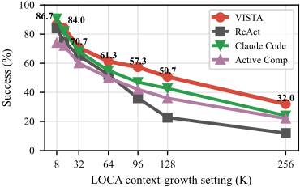
(a) 成功率 vs. 上下文增长设定 VISTA
·
(b) Token 成本 vs. 上下文增长设定
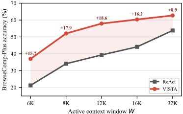
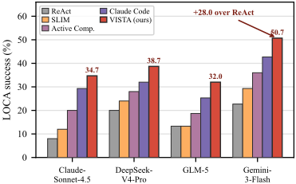
则强调先检索、后延迟综合。LOCA-Bench 的成本台账也排除了“花得更多”的解释：VISTA 每个任务使用 2.86M token 和 36.4 步，而 Claude Code 使用 6.72M token 和 171.5 步（附录表 7）。
缓存感知的美元成本。如果上下文编辑使可复用的 KV 前缀失效，较短的轨迹未必更便宜。因此，我们将 token 台账与标准的 Gemini-3-Flash 定价相结合：未缓存输入 $0.50/M，缓存输入 $0.05/M，输出（含思考）$3.00/M [7]。由此，VISTA 仍以每任务 $0.93 的成本保持最低开销，同时取得最高准确率；相比之下，Active Context Compression 为 $1.02，Claude Code 为 $1.05，ReAct 为 $1.26。
LOCA-Bench 百万 token 压力。LOCA-Bench 构造了 VISTA 所针对的失效模式：有用的观察在早期到达，庞大的工具调用结果不断累积，而 Agent 仍需在许多步之后正确行动。图 4 在完整的 75 任务 LOCA-Bench 套件上扫描了 8K 到 256K 的上下文增长；精确计数见附录表 9。在低压力下各方法接近，但随着干扰内容体量的增长，差距逐渐拉开：单向截断发生退化，而可恢复的外部化仍保持可用。在 8K 时各方法基本持平（86.7 对 84.0），但到 128K 时差距达到 50.7 对 22.7，且 VISTA 的平均 token 消耗也更少（2.86M 对 3.51M）。这正是可恢复工作记忆的预期特征。
| Usage → Method ↓ | Input (M) | Output (M) | Cache rate (%) | Cost (USD) |
|---|---|---|---|---|
| Active Comp. | 3.158 | 0.042 | 48.3 | 1.02 |
| VISTA | 2.783 | 0.08 | 56.1 | 0.93 |
| ReAct | 3.476 | 0.031 | 36.5 | 1.26 |
| Claude Code | 7.138 | 0.156 | 92.9 | 1.05 |
| Usage → Method ↓ | Input (M) | Output (M) | Cache rate (%) | Cost (USD) |
BrowseComp-Plus 检索压力。BrowseComp-Plus 检验该接口在以工作流为主的 LOCA-Bench 场景之外是否仍有帮助。此处的瓶颈在于早期检索到的证据能否存续到综合阶段。我们将 W 设为 12K，低于金标文档首次检索深度的中位数（约 17K token），因此 ReAct 常常丢失早期证据，而 VISTA 仍能在预算内继续运行。该设置隔离了上下文窗口压力：宽松的窗口通常能让决定性文档保持可见，因此各方法之间的差距要小得多。图 5 仅改变 W：过小的窗口使仪表盘开销变得高昂，过大的窗口则让 ReAct 能保留足够的证据，而增益在中间区间达到峰值。VISTA 的活跃上下文用量也少于 ReAct，但累计 API token 更多，因为它存活得更久、发起的检索轮次更多。
跨骨干网络的实验结果回答了这样一个问题：该效应是否局限于某一模型家族。事实并非如此：同一个未经训练的 VISTA 层在 128K 上下文窗口下提升了 Claude-Sonnet-4.5、DeepSeek-V4-Pro、GLM-5 和 Gemini-3-Flash 的表现（图 6），其中也包括更强的骨干网络。这支持了引出（elicitation）观点：当运行时状态可见时，能力强的模型能够使用上下文管理接口。
表 3 探讨了这样一个问题：显式状态以及关于何时进行管理的评分准则（rubric），究竟是仅仅替代了学习，还是同时也为学习提供了更好的基础。两者兼而有之。该接口解决了可观测性瓶颈，而强化学习（RL）仍可进一步优化作用于所暴露状态的管理策略。此处，分布内（In-Distribution, ID）设置在 BrowseComp-Plus（BC+）上进行训练和评估，而分布外（Out-Of-Distribution, OOD）设置在 GAIA 上训练并在 BC+ 上评估。在分布内设置中，零样本（zero-shot）变体相对 Base 模型有大幅提升，而我们的 RL 变体进一步提升，并超过了我们的上下文工具 GRPO 基线。在这些后训练运行中，我们使用 Qwen3-8B，并通过试点 rollout（pilot rollouts）对训练提示进行预筛选，以提高具有
| Method | ID ↑ BC+ → BC+ | OOD ↑ GAIA → BC+ |
|---|---|---|
| Zero-shot baselines | Zero-shot baselines | Zero-shot baselines |
| Base | 13.3 | 13.3 |
| Ours (zero-shot) | 20.0 (+6.7) | 20.0 (+6.7) |
| RL adaptation | RL adaptation | RL adaptation |
| Context-tool GRPO 27.3 (+14.0) | Context-tool GRPO 27.3 (+14.0) | 17.3 (+4.0) |
| Ours (RL) 31.3 (+18.0) | Ours (RL) 31.3 (+18.0) | 21.3 (+8.0) |
| Method | ID ↑ BC+ → BC+ | OOD ↑ GAIA → BC+ |
非零奖励方差的组所占的比例；验证集与测试集样本从不用于这一筛选。当训练转移到 GAIA 而评估仍保持在 BrowseComp-Plus 上时，同样的排序依然成立：在 GAIA 上训练得到的策略能够跨搜索任务迁移，且我们的方法保持最佳结果。因此，这一增益并不需要 RL：在任何大规模训练开始之前，零样本方法就已几乎达到 OOD 后训练的水平，这促使我们在主要实验中采用零样本方法。显式状态与由评分准则引导的决策同样可以与 GRPO 相结合，而 OOD 迁移则表明，这一提升并非仅仅是对训练集的拟合。
图 7 对图 2 所揭示的隐式行为进行了定位。在整个训练过程中，困难样本使用的上下文工具调用多于简单样本，并且随着验证奖励与自我感知（self-perception）的提升，工具调用变得更加活跃。这种分层表明，学到的策略并不会采用某一固定的管理频率：它为更难的任务分配更多的上下文管理动作，而为较容易的任务分配更少的动作。二者的同步变动为难度自适应管理提供了机制层面的证据。活跃上下文的缩减量同样呈上升趋势，并且在困难任务上始终保持最大，这表明学到的动作实质性地改变了提示状态，其作用不止于单纯增加搜索投入。综合来看，这些曲线表明，RL 使以状态为条件的管理策略更加精准：它既改变了 agent 介入的时机，也改变了 agent 所释放的活跃上下文数量。零样本结果与适配后结果互为补充，将“暴露状态”的价值与“优化作用于该状态的策略”的价值区分开来。这种匹配的实验设计在相同的骨干网络与评估协议下将这些效应隔离开来。
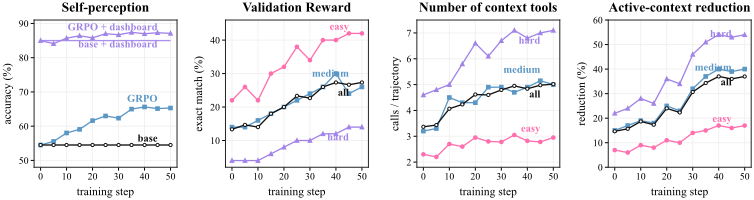
AMA-Bench 移除了实时的工具交互，但保留了长时记忆需求：模型必须回答关于已完成 agent 历史的问题。我们通过在问答（QA）之前将每条轨迹重放到工作区中来适配 VISTA，使动作与观察被组织进受管理的块中，而非扁平的提示。这检验了 VISTA 能否超越在线上下文控制，泛化到标准的长时记忆基准测试（benchmark）上。在完整的 208 个 episode 对比中，VISTA 在 F1 上领先，在
| Method | F1 | Acc. | Runtime/ep | Tokens/ep |
|---|---|---|---|---|
| BM25 | 0.335 | 0.575 | 35.5s | 303.43K |
| EMem | 0.363 | 0.651 | 166.2s | 470.30K |
| Mem0 | 0.329 | 0.536 | 108.0s | 30.63K |
| AMA | 0.368 | 0.753 | 176.5s | 268.98K |
| VISTA | 0.382 | 0.731 | 43.7s | 148.49K |
| Method | F1 | Acc. | Runtime/ep | Tokens/ep |
judge 准确率上与专用 AMA agent 的差距保持在约两个百分点以内，同时每个 episode 的运行时间仅约为其四分之一；在 F1 上它还优于 BM25、EMem 和 Mem0 适配器。因此，一个免训练的层即可与专门构建的记忆 agent 保持相当的水平，而运行成本低得多——这是向离线轨迹记忆迁移的一个清晰案例。附录中的表 10 给出了 AMA-Bench 按领域的细分结果。
我们通过七个变体对该方法进行探查，这些变体保持模型、任务集、token 估计器、提示组装和上下文限制固定不变，每次仅改变一个机制（图 8）。其中四个变体移除了某项能力。No-archive 移除了可恢复的外部化，no-dashboard 移除了工作区地图，no-recover 隐藏了载荷路径，fixed-archive 则用静态规则取代 agent 的选择。另外两个变体保持所有能力完好无损，仅扰动接口本身，其中一个改写归档的措辞，另一个将相同的状态渲染为状态看板。由于能力与描述沿两条相互独立的轴变化，任何剩余差距都可归因于机制本身，而非表面措辞。
这两条轴可以清晰地分离开来。移除一项能力的代价高昂：no-archive 降至 27 / 75，no-dashboard 降至 28 / 75，而措辞变体与状态看板变体则与完整的 38 / 75 相差仅一两分。因此，增益遵循的是能力路径，而非措辞。仅有工具同样不够。No-dashboard 仍保留归档与恢复动作的可用性，但由于缺乏可用于定位目标的状态，它发出了 255 次归档，而恢复仅有 57 次；相比之下，完整系统执行了 69 次归档和 105 次恢复（图 8b）。这种“过度归档、检索不足”的模式是盲目卸载，而非选择性管理，而这正是定理 1 中受速率限制的接口所预测的行为。综合来看，这些干预识别出一个耦合机制：可观测性告诉 agent 何时以及将什么内容外部化，而可恢复性则使这种外部化变得安全。无论是接口措辞还是工具可用性，单独都无法复现完整行为，这支持了我们将上下文管理视为闭环、状态感知控制的观点。
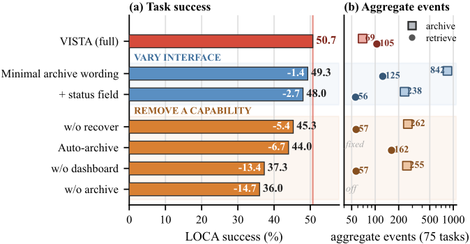
感知差距真的存在吗？VISTA 假设 agent 不会获得关于自身上下文的可靠运行时元数据。我们在真实 LOCABench 运行的首次归档时刻直接测试 token 数量级组件。我们移除仪表盘，要求骨干模型就三项独立探测报告自身状态，即对话记录总大小、单个块大小和两两大小比较，并将每项探测结果与精确 token 数量对照评分，测试对象为四个开源与闭源
| Backbone | Total size.- dash | Total size.+ dash | Block size.- dash | Block size.+ dash | Pairwise.- dash | Pairwise.+ dash |
|---|---|---|---|---|---|---|
| Claude-Sonnet-4.5 | 0.84 | 0 | 0.37 | 0.02 | 0.67 | 0.83 |
| DeepSeek-V4-Pro | 0.44 | 0 | 0.28 | 0 | 0.75 | 1 |
| GLM-5 | 0.48 | 0 | 0.35 | 0 | 0.73 | 0.88 |
| Gemini-3-Flash | 0.43 | 0 | 0.24 | 0 | 0.68 | 1 |
| Backbone | Total size.- dash | Total size.+ dash | Block size.- dash | Block size.+ dash | Pairwise.- dash | Pairwise.+ dash |
骨干模型（表 5）。这一差距稳定存在且幅度很大。在没有仪表盘的情况下，每个骨干模型都会误判大小，中位相对误差介于 0.43 至 0.84 之间，且估计值与真实值基本不相关。加入事实账本后，四个模型上的总大小误差全部降为零，块大小误差降至 0–0.02，同时两两区分能力被提升至接近完美。这一效应特定于 token 数量级，而非对话记录记忆，并且在开源与闭源权重上同样成立，因此该干预是一个事实性接口，而非更强的提示或更大的模型。这正是定理 1 中本体感觉通道的经验对应物，因为正是仪表盘使 agent 从大小盲态走向准确的大小可观测性。综合来看，这些结果在直接支配受预算约束的上下文管理的维度上确立了上下文状态盲视：token 数量级。VISTA 在这一实测信号之外，还暴露了新近性与归档状态。
一次被挽救的运行是什么样子的？图 9 展示了一次 128K LOCA-Bench 邮件分诊运行。仪表盘将一个大型收件箱导出块标记为最大条目，agent 将其归档，使活动提示保持在无归档反事实之下，并在之后为最终动作读回确切的载荷。相匹配的基线则对该块进行摘要或清除，无法恢复逐字原文值。在被挽救的任务中，这一完整的“先归档后恢复”循环出现在 VISTA 至少归档一个块的 16 个案例中的 8 个。在被挽救子集之外的另外 13 次包含归档的运行中，归档主要只是释放空间，而没有后续恢复。因此，VISTA 并非靠丢弃旧证据取胜；它将证据移出视野，同时保留一条可寻址的恢复路径。这一优势在长轨迹上最为明显，此时 VISTA 在降低活动上下文开销的同时提升了准确率。
12
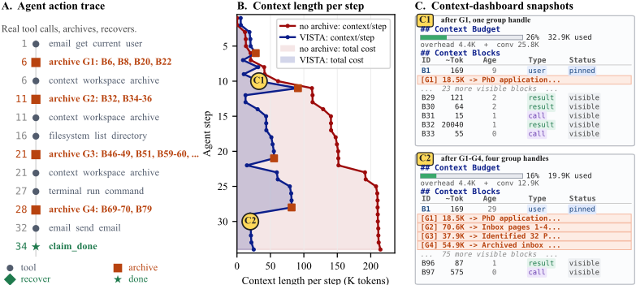
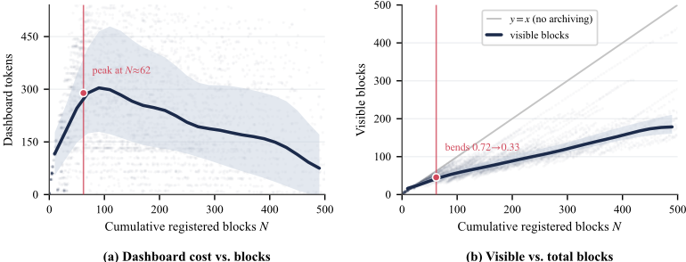
仪表盘能否扩展？仪表盘会增加 token 数量，因此一个合理的担忧是：随着轨迹中登记的块越来越多，它的开销会如何增长。我们在从官方 N =150 评估中抽取的三次 n =30 BrowseComp-Plus 运行上测量仪表盘成本（deepseek-v4-pro，W =12,288，B =163,840）。这些运行仅用于开销曲线的测量；所报告的 58.0% 准确率是在完整的 N =150 评估上计算得到的。我们使用测试框架（harness）的逐轮统计，覆盖每次运行中的全部 30 个查询。每一轮都会记录工具 schema 加系统提示词的固定开销（在所有查询中恒为 492 个 token，使用 cl100k_base 分词器计算）以及仪表盘消息；我们减去该固定部分，以分离出仪表盘自身的成本。图 10(a) 显示，这一净占用并非随轨迹长度线性变化：它在 N ≈ 62 附近达到约 340 个 token 的峰值，随后在观测范围内随 N 增大而下降。图 10(b) 显示，可见集合同样呈亚线性增长，其拟合斜率在 N ≈ 62 附近从 0.72 弯折至 0.33。在所评估的范围内，仪表盘的占用始终保持很小，并与轨迹的总体增长解耦。
先前的工作厘清了上下文决策所处的位置，以及 Agent 能够观察到哪些状态。
为 Agent 管理的上下文。这一路线将上下文决策置于模型策略之外。陈旧观测屏蔽（stale-observation masking）、Demand Paging、AgentOS 和 AgentSwing 在运行时中隐藏、换页或路由上下文 [6, 12, 18, 46]；这类系统可能会跟踪大小、年龄或使用情况，但这些状态仍保留在控制器内部。结构化驱逐与缓存高效的管理器（如 Context Window Lifecycle 和 TokenPilot）进一步推进了这一路线，用确定性的、语义感知的剪枝和缓存友好的摄取取代有损摘要，以更低的 token 成本扩展工作视野 [24, 40]，但它们仍然是代替 Agent 决定要驱逐哪些内容。MemGPT、Mem0、SimpleMem、MR.Agent、PlugMem、BudgetMem 和 SkillPro 等记忆与检索系统通过虚拟上下文、长期记忆或检索/图存储来组织既往经验 [5, 9, 15, 20, 22, 41, 47]。这些系统提供了有用的存储或路由基底，但 Agent 并不会获得关于其当前活动提示的逐块映射。在图 1 中，这对应于“为 Agent 管理上下文”的情形：运行时可能会丢弃陈旧观测、将记录换页移出或检索记忆，但模型只能看到最终得到的提示。因此，模型无法直接决定哪些可见证据应当保留、移出视野或稍后重新出现，也无法在“小而关键”的条目与“大而可舍弃”的工具结果之间做出取舍。
无状态元数据的自管理上下文。第二条路线将上下文管理纳入 Agent 循环之中。Context as a Tool、Active Context Compression、ContextBudget、Context-Folding 和 LongSeeker 暴露了压缩、折叠、删除或路由等操作，通常通过学习到的策略或专用控制器实现 [16, 17, 25, 26, 31]。这一路线与我们对自管理的构想最为接近：Agent 或控制器可以调用上下文操作，而不是被动地等待截断。然而，这些操作通常作用于摘要、里程碑、提交或分支，而非持久化的块表。ContextBudget 将 token 压力显式化，Context-Folding 提供了分支与返回操作，但它们都没有暴露 VISTA 式的状态，而这种状态是在保留小的精确细节的同时精确定位某个超大块所必需的。其他系统则增加了层次结构、压缩指导、与 Agent 兼容的管理器、学习式记忆操作或紧凑的推理摘要 [2, 8, 10, 11, 13, 27, 29, 30, 43, 44, 48]，而 PACE 通过预测每个条目与下一步动作的相关性来调整记忆粒度 [28]。这些工作支持了我们的前提，即上下文管理是 Agent 层面的决策；但相对于包含精确标识符、URL 或表格行的工具轨迹而言，它们的压缩表示通常是有损且粗粒度的。VISTA 则相反：它先分离出 Agent 必须感知的运行时状态，再将这种感知与块级无损归档和恢复相结合。
自我状态感知。关于预算感知、时间盲视以及智能体外化的研究表明，模型无法仅凭提示内容推断出这些信息 [1, 4, 14, 50]。互补的探测性研究发现，计划等对智能体至关重要的信息驻留在上下文中，并不会持久保存在隐藏状态中，一旦从可见上下文中移除便会衰减 [19]，这促使我们采用对工作记忆的显式自我描述，而不是假设模型会自行保留这些信息。VISTA 将上下文状态视为这样一种信号，并在推理时从外部提供该信号。这一框架将我们的贡献与单纯扩大上下文窗口或改进摘要器区分开来：缺失的信息不仅仅是更多的文本，而是对智能体当前工作记忆的紧凑自我描述。在我们的设定中，这种自我描述包括存在哪些块、它们有多大、有多旧、是可见的还是已归档的，以及能否被精确恢复。这正是图 1 所示的对比：智能体不仅看到上下文，还看到覆盖该上下文的紧凑状态视图。我们主要在 LOCA-Bench 上评估这一视图，该基准测试在可控的上下文增长条件下对在线工具智能体施加压力 [45]，并将 AMA-Bench 用作面向记忆的迁移测试点 [49]。
我们将上下文状态盲视（context-state blindness）确定为长时程智能体的一个基本瓶颈：提示词遗漏了对支配工作记忆的运行时状态的显式且可靠的视图。我们的诊断实验在四个开源与闭源骨干模型上证实了严重的词元量级盲视，我们的理论则证明了高效利用可恢复记忆存在一个陡峭的信息阈值。VISTA 通过运行时仪表盘以及无损归档与恢复机制解决了这一问题，为智能体提供其可据以行动的上下文状态信息，同时不破坏证据。在无需任何训练的情况下，同一接口在 LOCA-Bench 上的表现优于 ReAct、删除、掩蔽、紧缩以及 Claude Code，并能跨四个骨干模型迁移。结果表明，上下文管理不仅仅是一个策略学习问题：通过让隐藏的运行时状态变得可感知，可以激发出潜在能力，从而使接口成为后训练（post-training）的补充而非替代。
正文给出了这两种分离及其操作性解释。此处我们记录由内容推导的端点，以及定理 1 所使用的辅助列表译码不等式。
对于定义 2 的无仪表盘（dashboard-free）端点，设智能体对每个块观测到 W j = ln s j + ε j ，其中各 ε j 相互独立且 ε j ∼ N (0 , σ 2 ) ， σ > 0 。这是一个关于带噪尺寸感知的可解析模型，而非由附录 I 中的实证探针拟合得到的估计。
命题 2（固定尺寸比下由内容推导的信息有界）。对于上述信道，
因此，对于固定的 ( κ, σ ) ，由内容推导的尺寸信息是有界的，且与块数 n 无关；而精确的尺寸账本则可以在 n 个块中识别出其中某一块。
引理 1（Fano，列表译码形式）。设 J ⋆ 在 { 1 , . . . , n } 上服从均匀分布，并设 L ( Y, U ) 为任意一个大小为 1 ≤ m ≤ n - 1 的 ( Y, U ) -可测列表，其中 U ⊥ ( J ⋆ , Y ) 。记 I = I ( J ⋆ ; Y ) ， P c = Pr[ J ⋆ ∈ L ] ，
这就是重构模式下的 Fano 不等式：受预算限制的状态无法重现多于其比特数所能支持的块。我们重述该设定。历史记录持有 N 个块 X 1 , . . . , X N ，每个块都是 k 个均匀随机比特构成的独立字符串，因此 H ( X i ) = k ，且各 X i 相互独立。一个不进行恢复的方法持有一个揭示前的提示内状态 R ，满足 H ( R ) ≤ B 。状态 R 是各块以及该方法内部随机性的函数，在查询索引 i ⋆ 被揭示之前形成；而 i ⋆ 在 { 1 , . . . , N } 上均匀抽取，独立于其他一切。揭示之后，该方法输出猜测 g ( R,i ⋆ ) ，当 g ( R,i ⋆ ) = X i ⋆ 时即为正确。
设 P ( i ) e = Pr[ g ( R,i ) = X i ] ，并设所报告的成功概率为 1 - P e ，其中 P e = 1 N ∑ N i =1 P ( i ) e ，即对均匀分布的 i ⋆ 取平均。
步骤 1：逐块 Fano 界。固定某个块 i 。由于 X i 在大小为 2 k 的字母表上服从均匀分布，将 Fano 不等式应用于估计量 g ( R,i ) 可得
其中 H b 为二元熵函数，上界为 1 。
步骤 2：独立性将各块与预算耦合。由于各 X i 相互独立，故 H ( X 1: N ) = ∑ i H ( X i ) ，而条件熵的次可加性给出 H ( X 1: N | R ) ≤ ∑ i H ( X i | R ) 。因此
步骤 3：合并。利用步骤 1 中的 I ( X i ; R ) = k - H ( X i | R ) ≥ k - 1 - P ( i ) e k 并求和，
18
除以 Nk 并利用 P e = 1 N ∑ i P ( i ) e ，
VISTA 达到概率 1。VISTA 将每个块作为精确的转录文本写入外部存储，并在提示中仅保留一个紧凑的句柄。揭示前的提示持有指令和 N 个句柄，其大小为 O ( N log N ) ，而非 O ( Nk ) 。一旦 i ⋆ 被揭示，Agent 便读取载荷 i ⋆ 并逐字节恢复 X i ⋆ 。只要指令、各句柄以及一个恢复出的块能容纳于 B 之内，该方法就会精确地输出 X i ⋆ ，因此其成功概率为 1 。
渐近分离。该差距论断需要一个 VISTA 保持可行、同时有损界趋于零的区域。可行性要求 N 个句柄加上一个恢复出的块能够容纳，即 B ≥ c 0 N log 2 N + k ，其中常数 c 0 由句柄编码确定；而有损界 B Nk + 1 k 在 Nk/B →∞ 且 k →∞ 时趋于零。例如，在 k = ⌈ √ N ⌉ 且 B = cN log 2 N （其中 c > c 0 ）时，两者均成立：此时 B 支配句柄开销，因此 VISTA 可行并保持成功概率 1 ，而 B Nk + 1 k = Θ ( log N √ N ) → 0 ，故有损成功概率趋于 0 ，且当 N →∞ 时差距趋于 1 。固定的 B 并不表现出这种分离，因为此时 VISTA 自身 O ( N log N ) 的句柄表最终会超出预算。因此，这一分离是关于原始证据 Nk 的增长率相对于一个仅增长到足以对其编制索引的预算 B 的论断。□
证明分为五个部分：(A) 列表-Fano 引理；(B) 一个归约，它把腾挪恢复代价转化为列表译码错误，从而将信息预算 I 转化为 E [ Z ] 的下界；(C) 闭式权衡及其推论（端点、阈值、价格）；(D) 阶意义下的可达性构造；以及 (E) 从自适应归档策略到有序探测的归约。在整个证明中，J ⋆ 在 [ n ] := { 1 , . . . , n } 上均匀分布，κ = L/ℓ 是满足 2 ≤ κ < n/ 2 的整数，且 ν := log 2 n - κ κ > 0 。
(A) 列表-Fano 引理（引理 1 的证明）。设 L = L ( Y, U ) 为一个大小为 m 的列表，并令 E := 1 [ J ⋆ / ∈ L ] ，于是 Pr[ E =0] = P c 。用两种方式展开 H ( J ⋆ , E | Y, U ) 。由于 E 是 ( J ⋆ , Y, U ) 的函数，故 H ( J ⋆ , E | Y, U ) = H ( J ⋆ | Y, U ) 。此外
对 E 取条件：给定 E =0 时，J ⋆ 位于一个大小 ≤ m 的集合中，故 H ( J ⋆ | E =0 , Y, U ) ≤ log 2 m ；给定 E =1 时，J ⋆ 位于大小 ≤ n - m 的补集中（回忆 L 是 ( Y, U ) -可测的），故 H ( J ⋆ | E =1 , Y, U ) ≤ log 2 ( n - m ) 。以 P c 与 1 - P c 为权重取平均，并利用 H ( J ⋆ | Y, U ) = H ( J ⋆ ) - I ( J ⋆ ; Y, U ) = log 2 n - I （由于 U ⊥ ( J ⋆ , Y ) ，有 I ( J ⋆ ; Y, U ) = I ( J ⋆ ; Y ) = I ），
这正是引理 1。
(B) 归约：通过列表译码得到恢复代价的下界。根据"still-over"论证（见下文部分 (E)），只需对更强大的一类顺序策略证明该下界即可。这类策略按某个 ( Y, U ) -可测的顺序 π = ( π 1 , π 2 , . . . ) 归档各块，并在被释放的大小首次达到 L 时停止。由于大块自身即可释放 L，而每个承重块仅释放 ℓ，该过程恰好停在第 T = min( τ, κ ) 步，其中 τ 是 J ⋆ 在 π 中的位置：若 τ ≤ κ ，则它捕获 J ⋆ 并释放 L ；若 τ > κ ，则在到达 J ⋆ 之前它已归档了 κ 个承重块，释放了 κℓ = L 。被归档的承重块数量——它们正是之后必须被恢复的那些块——即为 (9)，Z = min( τ - 1 , κ ) 。
固定任意整数 1 ≤ m ≤ κ ，并令 L m := { π 1 , . . . , π m } ，即前 m 个被探测的块；这是一个大小为 m 、( Y, U ) -可测的列表。关键观察是
因为 Z = min( τ - 1 , κ ) ≥ m 当且仅当 τ - 1 ≥ m （利用 m ≤ κ ），当且仅当 J ⋆ 不在前 m 个探测之中。因此，记 P c ( m ) := Pr[ J ⋆ ∈ L m ] ，我们有 Pr[ Z ≥ m ] = 1 - P c ( m ) 。
利用尾和计算期望。由于 Z ∈ { 0 , 1 , . . . , κ } ，
单次列表界。将引理 1 应用于大小为 κ 的列表 L κ 。取 m = κ 且 n - κ > κ （故 ν = log 2 n - κ κ > 0 ），
重新整理，并利用 log 2 n ≥ log 2 ( n - κ ) ，
-
故 P c ( κ ) ≤ I +1 ν 。由于当 m ≤ κ 时 L m ⊆ L κ ，故 P c ( m ) ≤ P c ( κ ) ≤ I +1 ν ，并代入 (11)，
这里的正部将所推导的不等式与 Z ≥ 0 结合在一起。这正是定理 1 中的界。
(C) 推论。(i) 端点。尺寸感知账本（size-aware ledger）揭示尺寸向量，该向量识别出唯一一个大小为 L 的块，因此 I = log 2 n；随后智能体归档 { J ⋆ }，恰好释放 L，得到 τ = 1、Z = 0，从而 0 次恢复、0 次召回错误。仅内容智能体（无账本）具有 I = I content 。每当 ( I content +1) /ν → 0 时，式 (12) 给出 E [ Z ] /κ → 1；由命题 2 可知，固定 κ 和 σ 且 n →∞ 便是这样一个区域。纯尺寸盲情形 I = 0 则是 σ →∞ 的特例。
(iii) 代价。在取正部之前，右侧的下限 κ (1 - I +1 ν ) 是关于 I 的仿射函数，斜率为 - κ/ν 。因此该下限每比特以 κ/ν 的速率变化。特别地，要求 E [ Z ] ≤ κ - ∆ 会迫使 I ≥ ∆ ν/κ - 1 比特。
从 Z 到恢复义务与错误。每个被归档的承重块（load-bearing block）之后都会被查询。任何要正确回答所有这些查询的策略，都必须使每个这样的块重新可用，因此块级恢复义务数量的期望 ≥ E [ Z ] 。这里统计的是必须被恢复的块，而非文件读取调用；一次成组的有效载荷读取可能满足多个义务。如果至多能恢复 r 个被归档的承重块，则期望意义上至少仍有 [ E [ Z ] - r ] + 个块不可用，每一个都导致一次精确召回失败。所有三个尺寸感知代价均为 0 。
(D) 可达性（阶意义上的上界）。给定速率预算 I，令 M := min { n, ⌊ 2 I ⌋}，并考虑一个均衡的 M 桶账本：将 [ n ] 划分为 M 个桶，每个桶的大小至多为 b := ⌈ n/M ⌉，并报告包含 J ⋆ 的桶 Y。由于 Y 是 J ⋆ 的确定性函数，I ( J ⋆ ; Y ) = H ( Y ) ≤ log 2 M ≤ I，因此这是一个速率 ≤ I 的接口。智能体以均匀随机顺序探测所报告桶内的块，直到标志被清除。在桶大小为 b ′ ≤ b 的条件下，大块位于均匀分布的位置 P ∈ { 1 , . . . , b ′ } 。如 (E) 部分所述，它在被捕获时释放 L，因此被归档的承重块数量为 min( P - 1 , κ ) ≤ P - 1，从而得到
最后一个界对每个桶都成立，因此在关于 Y 取平均之后也成立。由于 ⌈ x ⌉ - 1 < x，故 E [ Z ] < n/ (2 M ) 。因此，I ≥ min { log 2 n, log 2 ⌈ n/ (2 δκ ) ⌉} 足以保证 E [ Z ] ≤ δκ 。当 I = log 2 n 时，我们有 M = n，从而各桶均为单元素桶且 Z = 0 。对每个固定的 δ ∈ (0 , 1)，这一充分速率与必要速率 (1 - δ ) ν - 1 均为 Θ(log 2 ( n/κ )) 。反之，若 δ n → 0 且 log 2 (1 /δ n ) = o ( ν )，则两个速率均为 (1 + o (1)) ν 。
(E) 为什么按序归档不失一般性，以及自适应是无用的。上文使用了两个归约。首先，任何容许的批量归档策略都可以细化为一个顺序次序，该次序检查相同的被选块，并在溢出消除时立即停止。这种细化不会带来更大的承重成本，因此针对更强大的顺序类所证明的下界同样适用于批量策略。其次，通过二进制标志实现的自适应不会增加任何可用信息：在大块被归档之前，由 t ≤ κ - 1 个承重块组成的每个已归档前缀所释放的空间都为 tℓ < L，因此该标志确定性地读出 'over'，且与选择了哪些块无关；在大块被归档之后，释放的大小 ≥ L，过程随即停止。因此，该次序所能获得的唯一 J ⋆ -信息就是 Y，与假设完全一致，且引理 1 适用于 ( Y, U ) -可测的前缀列表 L m 。这就是为什么下界 (12) 对所有自适应的纯内容（ I = I content ）策略与 rate-I 策略同样成立。□
注 1（解释：仪表盘比特与块级恢复）。定理 1 在一个信息参数上识别出一个尖锐的、按数量级呈现的相变：要将恢复负担降至 κ 的某个固定比例以下，需要 Θ(log( n/κ )) 比特关于应淘汰哪个块的信息。仿射下界的底限以每比特 κ/ν 的速率变化。无仪表盘的 Agent 从内容中感知到一个真实但带噪的大小信号，但命题 2 将该信号限定在 I content ≤ (ln 2)(log 2 κ ) 2 /σ 2 比特。对于固定的 κ 和 σ，该值关于 n 为常数，因此一旦工作区变大，它就会低于 log 2 ( n/κ ) 的腾出空间阈值，而完整账本则可达到 I =log 2 n 的一端。定理本身对 Y 而言是分布无关的；命题 2 则提供了一个可分析的纯内容端点。实证桥梁是对应的可操作量——模型的按大小排序能力：附录 I 中的成对大小比较准确率衡量内容能在多大程度上定位应淘汰的块，而仪表盘则将其推向 I =log 2 n 的一端（无账本时相对总大小误差中位数为 0.43 - 0.84，有账本时则坍缩为 0；表 5）。255/57 与 69/105 的归档/检索划分（图 8b）正是该定理所预测的“过度归档、检索不足”特征。
| Method | Training-free | Model-agnostic | Agent-controlled | Exact recovery | Context dashboard |
|---|---|---|---|---|---|
| ReAct (append until trunca- tion) | ✓ | ✓ | ✗ | ✗ | ✗ |
| Tool-result clearing | ✓ | ✓ | ✗ | ✗ | ✗ |
| Stale-observation masking | ✓ | ✓ | ✗ | ✗ | ✗ |
| Active Context Compression | ✓ | ✓ | ✓ | ✗ | ✗ |
| Skeleton compression | ✓ | ✓ | ✗ | ✗ | ✗ |
| Claude Code | ✓ | ∼ | ✓ | ∼ | ✗ |
| Learned compression (CAT, | ✗ | ✗ | ✓ | ✗ | ✗ |
| RL budget) Context-Folding | ✗ | ✗ | ✓ | ✗ | ✗ |
| LongSeeker | ✗ | ✗ | ✓ | ✗ | ✗ |
| GenericAgent | ✗ | ✗ | ✓ | ✗ | ✗ |
| VISTA (ours) | ✓ | ✓ | ✓ | ✓ | ✓ |
| Method | Training-free | Model-agnostic | Agent-controlled | Exact recovery | Context dashboard |
Table 6 summarizes the evaluated baselines and the learned-compression family against the design properties of Section 2. It isolates the two properties that distinguish VISTA: an agent-facing context dashboard and byte-exact recovery of externalized evidence. The marks are a coarse capability summary, not a performance claim, and partial marks reflect mechanisms that hold the property only in part, such as Claude Code, which keeps files on disk but still summarizes the active context.
本节报告了确切的运行配置、Agent 接收到的逐字提示词、仪表盘格式以及上下文工具定义，使读者无需访问我们的 harness 即可复现该实验设置。
算法 1 扩展了第 2 节中的紧凑循环。可恢复存储区 A t 包含由 Agent 归档的载荷，以及被最终的线上载荷防护（wire-payload guard）外置的任何原始工具结果；显式删除会将某个载荷从该存储区中移除。
输入：任务块 b task 、预算 B 、环境工具 T env 、上下文工具 T ctx 输出：最终答案与工作区轨迹 W 1: T
基准测试设置。LOCA-Bench 在可控的上下文增长条件下评估在线工具 Agent：当较早的推理、工具调用和观察结果仍保留在工作上下文中或已被外置出工作上下文时，Agent 必须持续行动。我们评估 75 个任务配置；除非另有说明，准确率定义为已解决任务数占全部 75 个任务的比例，错误和超时均计为失败。AMA-Bench 被用作次要的泛化基准测试。其回合（episode）提供一条已完成的轨迹，并就过去的事件、因果关系和状态变化提出问题。这并非 VISTA 原生的在线控制设定；它检验的是同一上下文管理层能否被改造为轨迹记忆。我们使用该基准测试的两阶段记忆接口。在记忆构建阶段，已完成的轨迹被作为一段不断增长的对话逐步重放：每个动作和观察结果都成为一个工作区块，未来的问题被隐藏，并且当工作区预算变得紧张时，重放的 Agent 可以归档精确的载荷。在检索阶段，VISTA 针对当前问题组装由此得到的工作区、仪表盘（dashboard）、构建事件以及可恢复的归档句柄。因此，AMA-Bench 的结果评估的是作为离线记忆的重放 VISTA 工作区 [35]，而不是简单地将完整轨迹放入模型提示中。
22
运行配置。VISTA 被集成到 LOCA-Bench 测试框架（harness）中，并作为一种策略被调用（ loca run -s self_managed ），无需训练，也无需针对具体模型的调优。主要结果使用 gemini-3-flash，预算为 128K（ max-context-size = 128 , 000 ）；跨骨干模型运行则在 claude-sonnet-4-5 、 deepseek-v4-pro （开放权重）和 glm-5 （开放权重）上原样复用同一策略。两个标志位定义了完整方法： SM_STRICT_LONG_CONTEXT=1 强制执行硬预算而非发出软警告， SM_BETTER_DASHBOARD=1 则选择下文的事实账本式仪表盘。消融实验在该基础配置上逐个切换单个标志位，例如 SM_DISABLE_ARCHIVE 、 SM_DISABLE_AGENT_ARCHIVE （固定归档策略）以及 SM_ENABLE_STATE_BOARD （状态板变体）。所有骨干模型的单任务超时均为 1800 秒，推理努力程度（reasoning effort）均为 medium。
基线定义。我们按照由谁做出保留或丢弃（keep-or-drop）决策来组织 LOCA-Bench 的基线。固定的外部策略包括：ReAct，即持续追加直至截断；Tool-result Clearing（工具结果清除），即在提示超过阈值后移除旧的工具结果/工具调用对；以及固定陈旧掩蔽（fixed stale masking），即在保留助手推理与工具调用骨架的同时掩蔽旧的工具观测。由 Agent 介导的基线仍会不可逆地缩减上下文。SLIM [42] 按其公开发布版本复现，一旦超出预算便周期性地总结较旧的上下文。Active Context Compression [26] 要求 Agent 编写并修剪其自身的知识块。一种结构化压缩基线保留先前上下文的紧凑骨架，遵循 context-as-a-tool（上下文即工具）压缩器 [16] 的设计。该家族中基于学习的方法通常不发布训练得到的检查点，且在许多情况下不发布代码，因此我们直接复现其中的免训练方法，对其余方法则遵循已发表的推理阶段设计，而不引入任何经过训练的策略。Claude Code 是 2026 年 5 月 6 日 CLI 发布时的 Claude Code 命令行 Agent，作为一个具备成熟工具调用与上下文处理启发式方法的强大实用型 Agent 被纳入。我们保留其完整发布的 CLI harness，仅将 MCP 任务工具替换为基准测试原生的等价工具。这些基线涵盖删除、掩蔽、总结、自压缩与结构化压缩。其中没有任何一种将面向 Agent 的上下文状态元数据与精确的证据恢复相结合。在 AMA-Bench 上，EMem 风格与 Mem0 风格的行是为本 harness 实现的本地适配器，应被解读为工程基线，而非官方复现。
基线复现细节。SLIM 与 Active Context Compression 是对已发表免训练方法的忠实复现，按照其作者描述的流程运行，并在与所有方法相同的 128K 预算处触发。SLIM 在超出预算后周期性地总结较旧的上下文，而 Active Context Compression 运行“探索、写入知识块、然后修剪原始历史”的循环。结构化压缩基线受 context-as-a-tool 压缩器启发，但并非忠实的重新实现，因为该方法属于学习型方法，而我们不运行任何经过训练的策略。对于 harness 原生基线，我们仅改变上下文管理机制，而保持 Agent 循环、工具、预算、骨干模型与评分固定不变。对于 Claude Code，除将 MCP 任务工具替换为基准测试原生任务工具之外，其发布的 CLI harness 保持原样；任务实例与评分保持不变。
上下文管理协议。Agent 接收以下附加于任务提示之后的指令块，并同时收到一条预算通知。该指令块在所有骨干模型上完全相同。
23
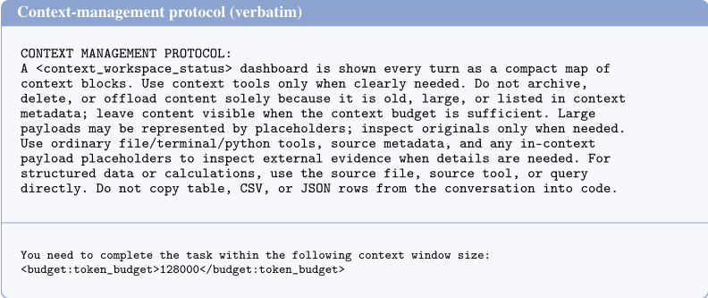
仪表板格式。每一轮，测试框架（harness）都会注入一个 <context_workspace_status> 块。它由一个预算条（budget bar）以及每个块对应的一行台账（ledger）记录组成，各列依次为 ID、近似 token 数、年龄（age，即 rootturn 距离，其中 0r 表示最新）、类型、压缩级别、父块（parent）以及状态（ visible 、 pinned 、 archived 或 offloaded_placeholder ）。下方的实例展示了与图 1 和图 3 中相同的紧凑列子集；完整渲染器（renderer）还会额外打印上文描述的压缩 Level 和 Parent 两列。
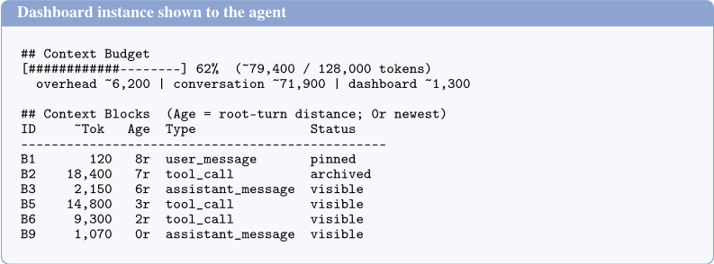
上下文工具定义。Agent 通过两个工具对工作区进行操作。归档（archive）会用一个紧凑句柄（handle）替换某个块，并返回载荷文件路径；Agent 使用普通的文件或终端工具读取该路径，即可恢复逐字节精确（byte-exact）的内容，因此恢复过程就是一次普通读取，无需专用的解压缩器。
上下文工具定义（docstrings）context_workspace_archive(block_id: str, replacement: str = "") -> str 用紧凑索引替换一个或多个块。原始内容在外部存储为载荷文件。操作以块为单位：仅归档所列出的块 ID。返回载荷文件路径以供后续恢复。block_id：块 ID、范围或组 ID，例如 "B3"、"B3,B4"、"B10-B20" 或 "G2"。replacement：被归档块（一个或多个）的简短索引文本。context_workspace_delete(block_id: str, reason: str) -> str 永久移除一个或多个块。已删除的内容无法恢复。block_id：块 ID、范围或组 ID。reason：说明该内容不再具有未来任务价值的简短理由。
大型工具结果以外部转录（transcript）载荷的形式存储，并附带紧凑占位符。这些载荷记录的是工具返回给模型的内容，而非完整的源数据库；如果某条转录被截断或分页，Agent 必须查询原始源工具以获取完整数据。
24
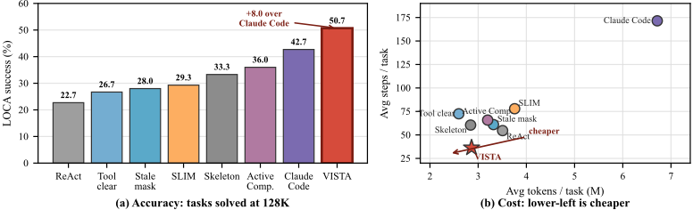
| Family | Method | Correct | Acc. | Timeout | Error | Steps | Tokens | Mgmt. events | Notes |
|---|---|---|---|---|---|---|---|---|---|
| NoCM | ReAct | 17 | 22.7 | 0 | 0 | 54.6 | 3.51M | 636 trims | full 75 |
| Deletion | Tool-result Clearing | 20 | 26.7 | 0 | 0 | 72.9 | 2.60M | 1,968 clears | full 75 |
| Masking | Fixed stale masking | 21 | 28 | - | - | 61 | 3.32M | - | full 75 |
| Summary | SLIM | 22 | 29.3 | - | - | 77.9 | 3.76M | - | full 75 |
| Self-compression | Active Context Compression | 27 | 36 | - | - | 65.8 | 3.20M | - | full 75 |
| Structured compression | Skeleton compression | 25 | 33.3 | - | - | 60.5 | 2.84M | - | full 75 |
| Agent CLI | Claude Code | 32 | 42.7 | 0 | 22 | 171.5 | 6.72M | - | full 75 |
| Ours | VISTA | 38 | 50.7 | 20 | 0 | 36.4 | 2.86M | 69 archive / 105 read | full 75 |
| Family | Method | Correct | Acc. | Timeout | Error | Steps | Tokens | Mgmt. events | Notes |
| Comparison | Both | Base. | VISTA | Neither |
|---|---|---|---|---|
| Fixed stale masking | 18 | 3 | 20 | 34 |
| SLIM | 17 | 5 | 21 | 32 |
| Active Context Compression | 20 | 7 | 18 | 30 |
| Claude Code | 25 | 7 | 13 | 30 |
| Comparison | Both | Base. | VISTA | Neither |
对于 LOCA-Bench，我们直接使用其独立发布的公开任务套件与评估协议，未作任何修改。该套件包含 75 个具有可控上下文增长的在线工具任务配置，其中先前的推理、工具调用与观察不断累积，直至上下文管理成为核心问题。我们报告任务成功情况，将错误和超时计为不正确，并对每次运行日志中出现的任务行计算平均步数与 token 数。因此，这些成本值描述的是观察到的执行成本，而非以成功为条件的成本。此外，我们还为 VISTA 变体记录了归档（archive）与恢复/读取（recover/read）事件。
图 11 与表 7 扩展了 128K LOCA-Bench 的对比，表 8 给出了两两方法之间被挽救任务的划分，表 9 给出了图 4 中上下文增长扫描的精确计数。
对于 BrowseComp-Plus，我们使用 DeepSeek-V4-Pro 在 N =150 的子集上评估深度研究检索，并基于一个采样答案报告经评判的 Pass@1。Agent 在该基准测试的固定语料库 [3] 中进行搜索，因此证据分散在检索到的段落中，且转录随反复检索而不断增长。为了暴露上下文管理行为，我们刻意使用紧凑的活动窗口（每次调用 W =12 K token）与总预算（ B =160 K），其选取方式使得早期证据能够在综合之前被逐出。
对于 GAIA，我们使用公开验证集（validation split）中固定随机抽取的 165 题子集。我们保留原始问题文本及附带文件，要求使用官方的 FINAL ANSWER: 格式，并以准精确匹配（quasi-exact match）评分。所有方法均使用 DeepSeek-V4-Pro、真实的网页/搜索/文件工具、W =12 K 与 B =80 K。
| Method | Setting | Success | Avg. steps | Avg. tok. | Notes |
|---|---|---|---|---|---|
| VISTA | 8K | 86.7 | 16.7 | 0.44M | complete |
| VISTA | 16K | 84 | 16.2 | 0.52M | complete |
| VISTA | 32K | 70.7 | 17.4 | 0.87M | complete |
| VISTA | 64K | 61.3 | 21.2 | 1.38M | complete |
| VISTA | 96K | 57.3 | 29.7 | 2.32M | complete |
| VISTA | 128K | 50.7 | 36.4 | 2.86M | complete |
| VISTA | 256K | 32 | 43.1 | 3.51M | complete |
| ReAct | 8K | 84 | 27.9 | 0.68M | complete |
| ReAct | 16K | 74.7 | 24.9 | 0.80M | complete |
| ReAct | 32K | 65.3 | 25.3 | 1.02M | complete |
| ReAct | 64K | 52 | 29.6 | 1.70M | complete |
| ReAct | 96K | 36 | 39.5 | 2.79M | complete |
| ReAct | 128K | 22.7 | 54.6 | 3.51M | complete |
| ReAct | 256K | 12 | 82.6 | 5.80M | complete |
| Method | Setting | Success | Avg. steps | Avg. tok. | Notes |
| Method | Embodied.Acc. | Embodied.F1 | Game.Acc. | Game.F1 | OpenQA.Acc. | OpenQA.F1 | Software.Acc. | Software.F1 | Text2SQL.Acc. | Text2SQL.F1 | Web.Acc. | Web.F1 |
|---|---|---|---|---|---|---|---|---|---|---|---|---|
| AMA | 0.678 | 0.489 | 0.814 | 0.407 | 0.817 | 0.249 | 0.565 | 0.15 | 0.838 | 0.395 | 0.782 | 0.272 |
| VISTA | 0.683 | 0.525 | 0.747 | 0.443 | 0.731 | 0.386 | 0.567 | 0.238 | 0.846 | 0.384 | 0.763 | 0.341 |
| Method | Embodied.Acc. | Embodied.F1 | Game.Acc. | Game.F1 | OpenQA.Acc. | OpenQA.F1 | Software.Acc. | Software.F1 | Text2SQL.Acc. | Text2SQL.F1 | Web.Acc. | Web.F1 |
| Case | Baselines failed | VISTA steps | Archive/read evi- dence | Evaluation signal |
|---|---|---|---|---|
| NHL B2B sched- ule analysis | ReAct, Tool-clear, SLIM | 64 | 5 archive calls; 17 payload reads/uses | CSV and Google Sheet correct; HA/AH/HH/AA counts verified |
| WooCommerce low-selling prod- ucts | ReAct, Claude-style, Tool-clear, SLIM | 38 | 4 archive calls; 3 payload reads/uses | Correct products moved; subscriber emails sent |
| Canvas final-exam schedule | ReAct, Claude-style, Tool-clear, SLIM | 17 | 1 archive call for course announce- ments | Final Excel schedule ac- cepted |
| NLP course re- minders | ReAct, Claude-style, Tool-clear, SLIM | 31 | 1 archive call for large roster table | Correct students emailed; dropped/submitted stu- dents excluded |
| Case | Baselines failed | VISTA steps | Archive/read evi- dence | Evaluation signal |
对于 AMA-Bench，208 个回合（episode）中的每一个包含 12 个开放式问题，共得到 2496 个经评判的问答（QA）对。我们按照该基准测试的评测框架（harness）报告评判准确率与 token 级 F1。每个回合的运行时间仅针对生成过程进行测量；评判时间则在分析文件中单独报告。
VISTA 提供了缺失的本体感受（proprioceptive）信号，但并不能保证 agent 能很好地利用它们。模型仍然可能误读仪表盘、归档其之后才需要的证据，或过晚才恢复载荷。引出（elicitation）视角还预测了一个下限：潜在上下文管理技能较少的模型几乎没有可供接口解锁的内容，而 GLM-5 与 DeepSeek-V4-Pro 在我们的四骨干模型对比中增益最小。我们测试了四个骨干模型；刻画该曲线低能力端的工作仍是开放问题。我们同样未测试可迁移的对抗输入 [32]、被投毒的外部证据 [33]，或生成式触发设置 [39]。
VISTA 是对后训练（post-training）的补充，而非其替代方案。训练改进的是 agent 对上下文状态信息的处理方式，而仪表盘提供的精确运行时状态在提示（prompt）中并未显式给出。第 2.5 节在 Qwen3-8B 迁移设置中展示了这种兼容性。
26
将后训练扩展到主要的多基准测试、多骨干套件，用预测相关性充实台账（ledger），并与学习型压缩管理器或记忆-动作策略 [43, 44, 48] 进行比较，是自然的后续步骤。最后，EMem 风格与 Mem0 风格的 AMA-Bench 行是本地适配器，并非官方实现，因此它们仅用于支持诊断，而不是针对这些系统的最终论断；AMA-Bench 仍然是一项迁移测试，而非主要基准测试。
我们的主要结论建立在固定评测集上较大的任务级差距之上。大多数基准测试单元对每个任务仅使用一条采样轨迹；针对运行间方差与微小差异的多种子重复评测仍是未来工作。
本附录记录了表 5 背后的诊断。其目标是直接测量骨干模型（backbone）能否读取自身的上下文状态，从而将感知与技能区分开来。
数据。我们以每次真实 LOCA-Bench 运行的首个归档事件为锚点，即 Agent 自身决定将内容外置化的那一刻。我们取该调用发生前累积的对话记录（transcript）作为快照，将每条消息视为一个块。运行时仪表盘不会持久化到对话记录中，因此存储的消息本身已不含实时账本（live ledger）；我们还额外剥离了三个会泄露状态的注入产物，即上下文管理协议头、打印 token 计数的硬上限拒绝通知，以及已归档块的占位符。对所有锚定快照的扫描确认不存在任何残留的 token、预算或用量字符串，也没有逐块的用量标注。29 次运行包含归档；我们通过丢弃末尾块将每个快照限制在 100K token 以内，使其能适配所有骨干模型的上下文窗口，并使用评测框架（harness）所用的同一分词器计算真值（ground truth）。
问题与条件。我们询问三个量，每个量各用一次独立请求，以保证各测量相互独立。Total size（总大小）：估计整个对话记录的 token 数。Block size（块大小）：估计四个抽样块的 token 数。Pairwise（成对比较）：对抽样的块对判断哪个更大，在真实大小相差在 2 × 以内的困难子集上报告结果。-dash 条件仅展示清洗后的对话记录；+dash 条件则在前面附加事实性账本（即实现细节附录中的各列）。大小类回答以中位相对误差计分，成对比较则以相对较大块为基准的准确率计分。我们以贪心解码运行 Gemini3-Flash、Claude-Sonnet-4.5、DeepSeek-V4-Pro 和 GLM-5。Claude-Sonnet-4.5 返回有效结构化输出的频率略低于其他三个模型，但这一定性差距以及提供仪表盘后差距的消除在所有骨干模型上均成立。这些探针在 token 数量级这一直接支配预算化上下文管理的维度上确立了上下文状态盲视的存在；该接口在暴露这一被测信号的同时，也暴露近期性（recency）与归档状态。
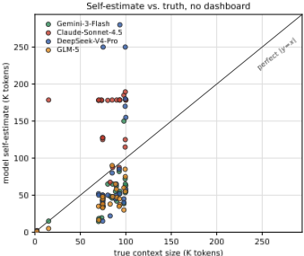
1 条证据未在原文中核对到